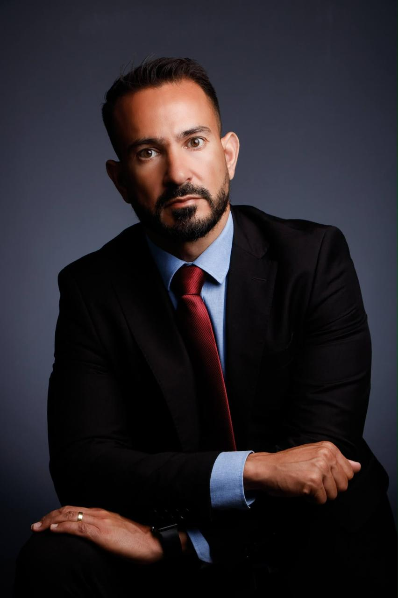

Como os custos e a formação de preços serão afetados?
Uma leitura para quem precisa proteger rentabilidade e competitividade.
UM ENCONTRO WOW TAX
Na indústria e no comércio
A mudança já começou. Este é o momento de entender o que ela significa para o seu negócio — e decidir como se preparar.
Quero participarA Reforma Tributária é uma das maiores transformações do ambiente empresarial brasileiro em décadas.
Ela atravessa custos, formação de preços, créditos, fluxo de caixa, contratos, processos e decisões de investimento. Por isso, não deve ser tratada como um assunto isolado do departamento fiscal.
Este encontro coloca o tema no centro da estratégia — com linguagem clara, visão prática e diferentes pontos de vista.
O QUE ESTÁ EM JOGO
Antecipar é uma escolha estratégica.
O encontro foi desenhado para transformar um tema complexo em uma agenda de decisão possível.
Uma leitura para quem precisa proteger rentabilidade e competitividade.
Os efeitos tributários também aparecem no caixa e no planejamento.
Antecipar cenários é melhor do que corrigir decisões depois.
NO PALCO
Empreendedorismo, gestão, contabilidade e direito tributário em uma mesma experiência.
Experiência, atitude e a capacidade de transformar desafios em movimento.
Uma presença para ampliar a conversa sobre escolhas, transformação e futuro.
TRAJETÓRIAS
Além das participações especiais, o palco reúne especialistas com vivência acadêmica, contábil, jurídica e empresarial.
Contadora pela UFRGS, mestre em Controladoria e Finanças, empresária, professora e palestrante, com mais de 25 anos de experiência na área tributária.
Ex-Deloitte, onde atuou por oito anos, consolidou sua experiência como executiva na área de Tax de outras multinacionais. Hoje, está à frente de três empresas dedicadas à consultoria tributária, tecnologia e educação.
Formou mais de 6 mil Tributaristas Camisa 10 em todo o Brasil.

Advogado e mestre em Ciências Contábeis, professor em cursos de pós-graduação e autor de diversos livros em matéria jurídica e contábil.
Sócio da Faculdade BSSP e da BSSP Consulting, une experiência acadêmica, jurídica e empresarial para traduzir temas complexos em decisões mais claras.
Quatro movimentos, uma conversa contínua: entender, medir, planejar e agir.
O que muda na lógica tributária brasileira e por que isso já importa para a operação.
01Onde estão os impactos em custos, preços, créditos, caixa e processos.
02Como construir cenários e colocar a adaptação no planejamento empresarial.
03Quais conversas e decisões precisam acontecer dentro da sua empresa.
04AO FINAL
Uma leitura ampla dos impactos da Reforma Tributária.
Referências para conversar melhor com sua equipe e seus assessores.
Uma agenda prática para antecipar riscos e oportunidades.
SOBRE A WOW TAX
Na WOW Tax, conhecimento técnico e visão estratégica caminham juntos para transformar a gestão tributária em uma experiência mais eficiente, segura e orientada a resultados.
Com atuação em consultoria fiscal, planejamento tributário, recuperação de créditos, gestão contábil e adaptação à Reforma Tributária, a empresa desenvolve soluções personalizadas para diferentes necessidades e setores.
Conheça a WOW TaxENCONTRO PRESENCIAL
CENFORPE — Centro de Formação dos Profissionais da Educação.
ANTES DE CONFIRMAR
Sim. A participação é gratuita, com vagas limitadas e inscrição antecipada.
Empresários, gestores, profissionais de contabilidade, tributário, jurídico, finanças e lideranças da indústria e do comércio.
No CENFORPE, em São Bernardo do Campo, a partir das 9h.
Depois de preencher o formulário, a confirmação aparece na própria página e os detalhes ficam disponíveis para você.
INSCRIÇÃO RECEBIDA
Sua vaga foi reservada. Enviamos os detalhes do evento para o e-mail informado.
Voltar ao início